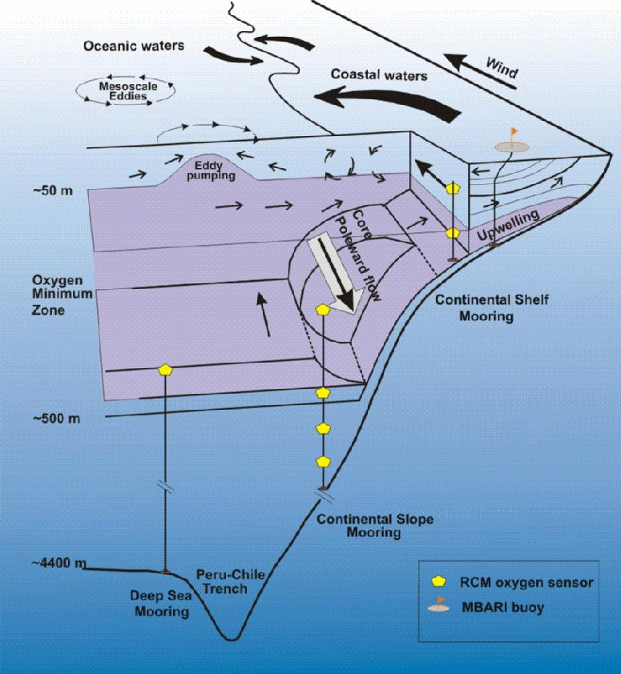

| Moorings |
Studies in the Peru-Chile Current System have identified coastal upwelling, coastal trapped waves, Rossby waves, and mesoscale eddies and meanders as important physical processes affecting sea-surface temperature, sea level and currents. Moreover, currents and sea level variability in the region have been shown to be strongly influenced by the equatorial wave dynamics.
We hypothesized that the Oxygen Minimum Zone (OMZ) variability is being strongly modulated by the passage of low-frequency waves forced at the equator. Vertical motions resulting from Rossby and Kelvin waves could be important for bringing low-oxygen and nutrient-enriched subsurface water into the euphotic zone. Alongshore advection associated to this waves could be producing a significant fluctuation in the water column properties such as salinity, oxygen and nutrient concentrations.
To evaluate the vertical distribution and time variability of the OMZ in the eastern SouthPacific (ESP), we are using the state-of-the-art technology to directly measure dissolved oxygen concentration together with physical and bio-optical properties of the water column with moored instruments. We are using mooring observations off Chile (at 21°S), sea level along the coast off Peru and Chile, satellite wind stress, satellite sea level anomalies, hydrographic data, and simple wind-forcing equatorial wave models to determine the linkages among planetary waves (Rossby and Kelvin waves), mesoscale eddies, and the OMZ variability in the Peru-Chile Current System.
The figure of the OMZ shown below illustrates some of the main characteristics of the Perú-Chile current system: the coastal upwelling, the Perú-Chile undercurrent core, the coastal fronts, the mesoescale and meander eddies.

The figure also shows the position of the three moorings of northern Chile (~21° S), where dissolved oxygen sensors are identified by yellow symbols. The mooring of the continental shelf (21°21.520’S, 70°07.795’W), of continental slope (20°59.60’S, 70°32.746’W), and deep-sea (20°52.819’S, 72°07.051’W), are located at depths of ~80, ~900 and ~4400 m, respectively.
Characteristics of the water column at selected depths in the studied zone are permanently monitored by Acoustic current-meters, Dissolved Oxygen sensors, Temperature sensors and Conductivity sensors.